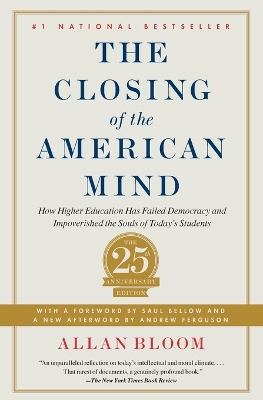
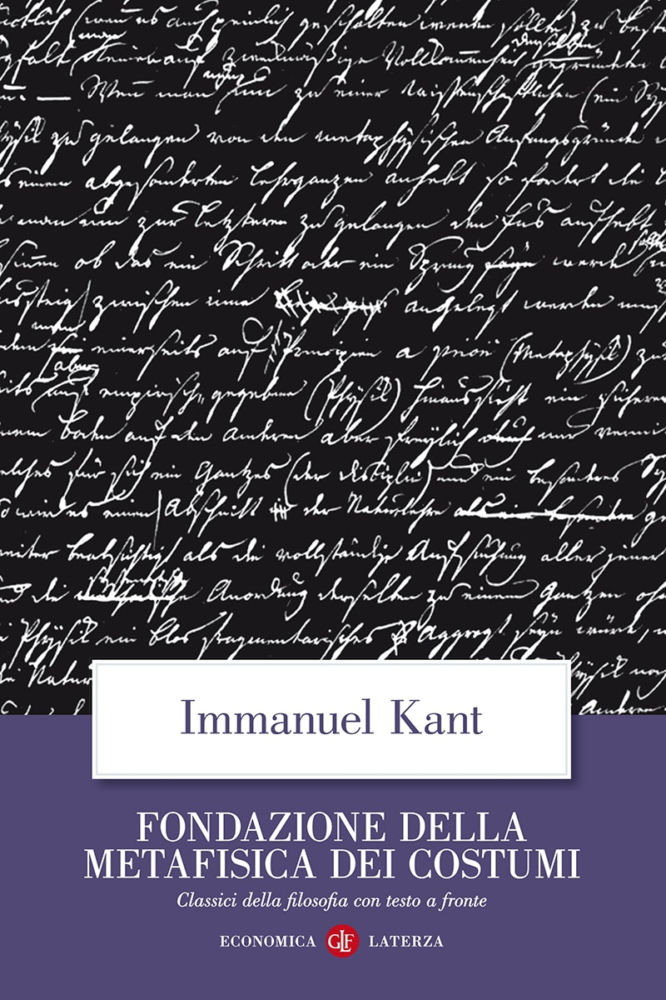
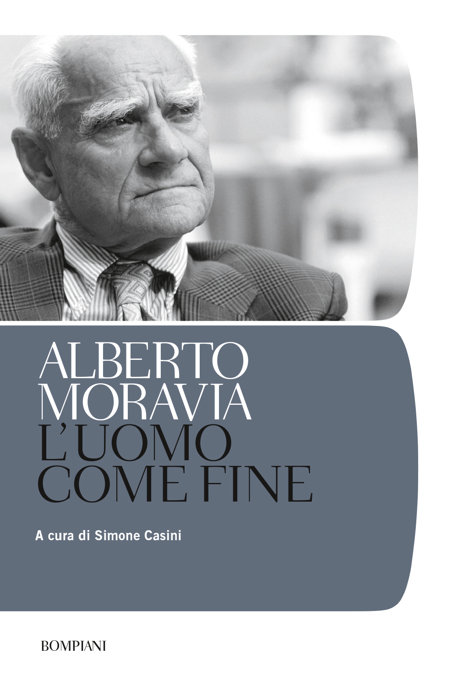
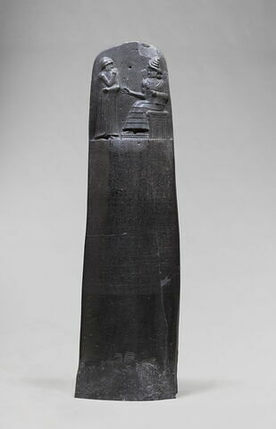

39:33 · 10 OPERE
Trasparenti fino all'invisibilità.
Il filo del discorso
Dr Divago riflette sull’invisibilità di chi cerca di opporre argomenti ed esigenze etiche al conformismo. La prima parte ripercorre libri critici dell’università e della cultura di massa: Bloom, Kors e Silverglate, insieme a due testi dell’autore, sono proposti come tentativi di descrivere in anticipo problemi che il relatore considera ormai evidenti. L’assenza di confutazioni o di attenzione viene letta da lui come un segno della crisi del confronto, senza che ciò dimostri da sé la verità di quelle diagnosi. Schweitzer offre il riferimento a un’etica della civiltà; il rifiuto del negazionismo e la distinzione fra gusti personali e giudizi motivati introducono la domanda su un terreno comune di realtà. Il principio kantiano dell’umanità come fine, accostato a Moravia, diventa il centro della critica alla riduzione dell’individuo a strumento. Seguono una polemica sulla giustizia britannica, alcuni esempi di relativismo e una riflessione sulla velocità delle trasformazioni sociali. Nell’ultima parte i dispositivi indossabili sono evocati come immagine di una crescente esposizione dei dati personali: la trasparenza tecnica si contrappone così all’invisibilità delle ragioni individuali. Le accuse e le previsioni del discorso restano attribuite al relatore; dati storici, testi e norme sono distinti dalle interpretazioni.
I libri nel discorso

The Closing of the American Mind
Copertina: Simon & Schuster · edizione del venticinquennale · 2012 · testo inglese
Copertina autentica dell’edizione di riferimento, controllata visivamente. Non identifica l’esemplare letto o citato nel video.
Allan Bloom, The Closing of the American Mind, 1987, con richiamo al sottotitolo.
Passaggio 5:55 ↗ · Fonti e libro ↗The Shadow University. The Betrayal of Liberty on America’s Campuses
Copertina: Free Press, New York, 1998, xi + 415 pagine; ISBN 9780684853215.
Immagine autentica dell’opera, controllata visivamente; l’edizione di riferimento non è attribuita al filmato.
Kors e Silverglate, The Shadow University, 1998; titolo nella trascrizione automatica normalizzato.
Passaggio 8:16 ↗ · Fonti e libro ↗
La società del contrario
Copertina: Zambon · 2005
Copertina autentica dell’edizione di riferimento, controllata visivamente. Non identifica l’esemplare letto o citato nel video.
La società del contrario dell’autore, titolo esplicito.
Passaggio 10:45 ↗ · Fonti e libro ↗
The Empty Campus
Copertina: Lulu · edizione inglese di riferimento
Immagine associata all’ISBN di riferimento e controllata visivamente; edizione e traduzione non identificate come quelle citate o lette nel video.
The Empty Campus, titolo esplicito e anno 2016 dichiarato.
Passaggio 11:49 ↗ · Fonti e libro ↗Macbeth
Copertina: BUR Classici, 25 gennaio 2022, introduzione, note e traduzione di Rocco Coronato, testo inglese a fronte, 272 pagine; ISBN 9788817160667.
Immagine autentica dell’opera, controllata visivamente; l’edizione di riferimento non è attribuita al filmato.
Macbeth e signifying nothing, opera esplicitamente nominata.
Passaggio 13:59 ↗ · Fonti e libro ↗
The Decay and Restoration of Civilization
Copertina della raccolta: Prometheus · The Philosophy of Civilization · 1987 · raccolta in inglese
Copertina della raccolta Prometheus del 1987 che contiene The Decay and Restoration of Civilization e Civilization and Ethics. I due saggi, originariamente distinti, restano voci separate. L’edizione in inglese dell’immagine non è attribuita al video.
Schweitzer, The Decay and the Restoration of Civilization, titolo esplicito.
Passaggio 15:40 ↗ · Fonti e libro ↗Civilization and Ethics (Kultur und Ethik)
Copertina della raccolta: Prometheus · The Philosophy of Civilization · 1987 · raccolta in inglese
Copertina della raccolta Prometheus del 1987 che contiene The Decay and Restoration of Civilization e Civilization and Ethics. I due saggi, originariamente distinti, restano voci separate. L’edizione in inglese dell’immagine non è attribuita al video.
Schweitzer, Civilization and Ethics, titolo esplicito.
Passaggio 15:40 ↗ · Fonti e libro ↗
Fondazione della metafisica dei costumi
Identificazione probabile
Copertina: Laterza · Economica Laterza 122 · Filippo Gonnelli, edizione 1997 e ristampe
Immagine autentica dell’opera, controllata visivamente; l’edizione di riferimento non è attribuita al filmato.
Formula kantiana dell’umanità sempre anche come fine: opera identificata dal contenuto, titolo non pronunciato.
Passaggio 22:43 ↗ · Fonti e libro ↗
L’uomo come fine
Copertina: Bompiani, 2019, a cura di Simone Casini, 464 pagine; ISBN 9788845298523.
Immagine autentica dell’opera, controllata visivamente; l’edizione di riferimento non è attribuita al filmato.
Moravia, L’uomo come fine, titolo esplicito.
Passaggio 24:07 ↗ · Fonti e libro ↗
Codice di Hammurabi
Fotografia della stele: Stele paleobabilonese del regno di Hammurabi, XVIII secolo a.C.; esemplare SB 8, Musée du Louvre. Fotografia dell’oggetto, nessuna edizione libraria attribuita.
Fotografia integrale della stele SB 8 conservata al Louvre, reperita nel catalogo delle collezioni. È un’immagine dell’oggetto antico, non una copertina né una pagina di una traduzione. Respinta l’immagine promozionale con smartphone proposta dalla pagina introduttiva.
Codice di Hammurabi esplicitamente citato come esempio storico di normazione.
Passaggio 30:35 ↗ · Fonti e libro ↗